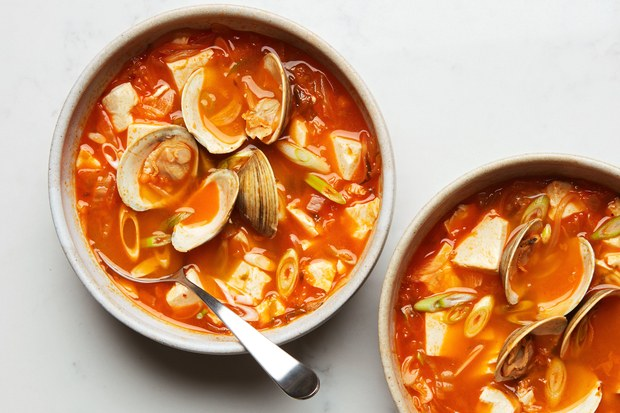

Kimchi Soup with Tofu and Clams
Two flavor powerhouses—bright, spicy kimchi and savory, briny clams—create a soup fast enough to make on even the most hectic weeknight. Clams can be very salty or not at all, so wait until they have opened before adjusting the seasoning.
Summary
- Yield
- 4 servings
- Active Time
- 20 minutes
- Total Time
- 40 minutes
Ingredients
- 2 Tbsp. neutral oil (such as canola or grapeseed)
- 1 small onion, thinly sliced
- 6 garlic cloves, thinly sliced
- 1 lb. kimchi, juices reserved, thinly sliced
- 1 Tbsp. white miso
- 1/2 tsp. (or more) kosher salt
- 1 lb. littleneck clams (8–12), scrubbed
- 2 Tbsp. unsalted butter
- 1 lb. silken tofu, drained, cut into 1" pieces
- 2 scallions, white and light green parts only, thinly sliced
Preparation
-
Heat oil in a 4–6-qt. Dutch oven or large heavy pot over medium until hot. Add onion and garlic and cook, stirring often, until onion is softened, 3–5 minutes. Add kimchi along with its juices and cook, stirring often, until kimchi begins to caramelize and stick to bottom of pot, 8–10 minutes. Add 4 cups water and increase heat to medium-high to bring to a boil. Reduce heat as needed to maintain a simmer and cook, stirring occasionally, until some of the liquid is evaporated and flavors have melded, about 15 minutes.
-
Spoon a few tablespoons of soup into a small bowl. Add miso and salt. Stir until miso loosens to a smooth sauce-like consistency, then stir back into soup (this helps avoid any lumps of undissolved miso).
-
Add clams to soup. Cover and cook, stirring occasionally, until clams open, 5–7 minutes depending on size (discard any clams that do not open after 15 minutes). Mix in butter, then add tofu. Give soup one very gentle stir just to incorporate tofu (be careful not to break it up too much). Continue to cook soup, undisturbed, just until tofu is warmed through, 1–2 minutes. Taste and season with salt if needed.
-
Divide soup and clams among bowls. Top with scallions.